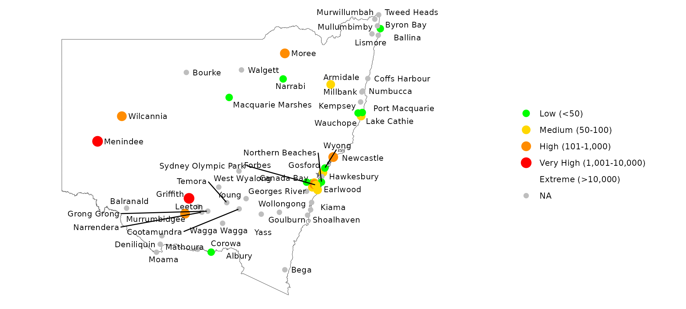
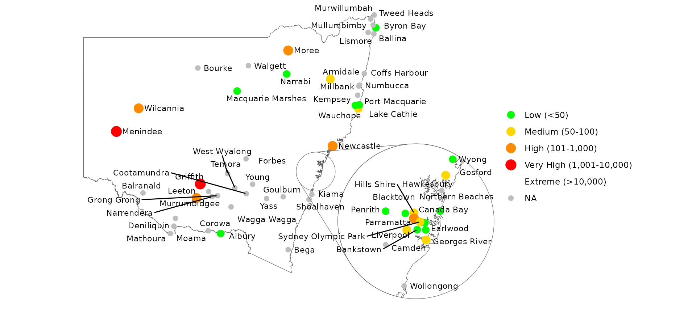

library(ggmapinset)
#> Loading required package: sf
#> Linking to GEOS 3.10.2, GDAL 3.4.1, PROJ 8.2.1; sf_use_s2() is TRUE
library(ggplot2)
nc <- sf::st_read(system.file("shape/nc.shp", package = "sf"), quiet = TRUE)This article provides some recipes for working with insets.
Example usage
This example uses the mosquito surveillance dataset
ggmapinset::mozzies_nsw2301. It includes points from across
New South Wales.
head(mozzies_nsw2301)
#> # A tibble: 6 × 7
#> location week_ending species count type lat long
#> <chr> <date> <fct> <ord> <fct> <dbl> <dbl>
#> 1 Albury 2023-01-07 Culex annulirostris low inland -36.1 147.
#> 2 Albury 2023-01-07 Aedes vigilax NA inland -36.1 147.
#> 3 Albury 2023-01-07 total low inland -36.1 147.
#> 4 Albury 2023-01-14 Culex annulirostris high inland -36.1 147.
#> 5 Albury 2023-01-14 Aedes vigilax NA inland -36.1 147.
#> 6 Albury 2023-01-14 total high inland -36.1 147.Firstly, we can recreate the basic maps from the report accompanying
the dataset. Since the dataset has latitude and longitude coordinates,
it can easily be converted into a spatial data frame with
sf::st_as_sf().
library(dplyr)
library(sf)
# just take the total count from a single week of the data
mozzies <- mozzies_nsw2301 |>
filter(species == "total", week_ending == as.Date("2023-01-07")) |>
st_as_sf(coords = c("long", "lat"), crs = st_crs("WGS84"))
labels <- c("Low (<50)", "Medium (50-100)", "High (101-1,000)",
"Very High (1,001-10,000)", "Extreme (>10,000)")
scale1 <-
scale_colour_manual(
name = NULL,
values = c("green", "gold", "darkorange", "red", "black"),
labels = labels,
na.value = "grey",
drop = FALSE
)
scale2 <-
scale_size_ordinal(
name = NULL,
labels = labels,
range = c(3, 5),
na.value = 2,
drop = FALSE
)
ggplot(mozzies) +
geom_sf(data = nswgeo::nsw, fill = NA) +
geom_sf(aes(size = count, colour = count)) +
geom_sf_text(aes(label = location), hjust = 0, nudge_x = 0.25, size = 3) +
coord_sf(xlim = c(NA, 158)) +
scale1 + scale2 +
theme_void()
#> Warning in st_point_on_surface.sfc(sf::st_zm(x)): st_point_on_surface may not
#> give correct results for longitude/latitude data
The warning about sf::st_point_on_surface can be
disregarded. Any errors due to the coordinate system are unlikely to
make much visual difference to where text is placed in this case.
This plot looks a little congested. We can improve things a bit by using the repulsive version of the label geom from ggrepel:
library(ggrepel)
ggplot(mozzies) +
geom_sf(data = nswgeo::nsw, fill = NA) +
geom_sf(aes(size = count, colour = count)) +
geom_text_repel(
aes(label = location, geometry = geometry),
hjust = 0,
nudge_x = 0.25,
size = 3,
max.overlaps = 15,
point.padding = 0,
min.segment.length = 1,
stat = "sf_coordinates"
) +
coord_sf(xlim = c(NA, 158)) +
scale1 + scale2 +
theme_void()
#> Warning in st_point_on_surface.sfc(sf::st_zm(x)): st_point_on_surface may not
#> give correct results for longitude/latitude data
#> Warning: ggrepel: 7 unlabeled data points (too many overlaps). Consider
#> increasing max.overlaps
The main thing to note above is that geom_text_repel()
is not hooked into the ggplot2’s geospatial integration,
so it needs to be told to use stat_sf_coordinates() to
compute the coordinates, and it needs an explicit mapping for the
geometry aesthetic.
That improved most of the map except for the Sydney region where most
of the labels are missing since they would overlap. The
max.overlaps parameter to geom_text_repel()
can help, but doesn’t address the overcrowding issue. This is where an
inset can help.
First we define the inset we want. We can collect up all the points
from the dataset that were labelled with type == "sydney"
and use some standard geospatial functions to get the diameter and
centre of a circle that will cover all those points. We then specify
that we want this circle to be enlarged by a factor of 4, and shifted to
south and east:
sydney <- filter(mozzies, type == "sydney")
sydney_size <- st_distance(sydney, sydney) |> max() |> units::set_units("km")
sydney_centre <- st_union(sydney) |> st_centroid()
sydney_inset <- configure_inset(
centre = sydney_centre,
radius = as.numeric(sydney_size),
translation = c(400, -200),
scale = 4,
units = "km"
)Finally, we can repeat the previous plot with the _inset
version of the relevant layers. The inset configuration is passed to the
coord. The only other change is that to make sure the labels for Sydney
sites appear in the inset instead of the base map, we need to remap the
x and y aesthetics to the versions computed by
the underlying stat.
ggplot(mozzies) +
geom_sf_inset(data = nswgeo::nsw, fill = NA) +
geom_sf_inset(aes(size = count, colour = count), map_base = "clip") +
geom_text_repel(
aes(
x = after_stat(x_inset),
y = after_stat(y_inset),
label = location,
geometry = geometry
),
hjust = 0,
nudge_x = 0.25,
size = 3,
force_pull = 2,
max.overlaps = Inf,
point.padding = 0,
min.segment.length = 1,
stat = "sf_coordinates_inset"
) +
geom_inset_frame() +
coord_sf_inset(xlim = c(NA, 158), inset = sydney_inset) +
scale1 + scale2 +
theme_void()
Further tweaks of label placement can be achieved by playing around
with the parameters of geom_text_repel(), or by passing
vectors of positions into the nudge_x and
nudge_y parameters.
Different aesthetics for inset layer
By default, geom_sf_inset() creates two copies of the
map layer: one for the base map and the other for the inset map. The
inset is transformed and clipped, but uses the same underlying
aesthetics mapping and parameters.
If you want to have different aesthetics for the two layers, you’ll
need to turn off this copying with map_base = "none". With
this parameter set and an inset parameter provided, only
the inset layer will be drawn. To draw only the base layer, you can use
map_inset = "none", inset = NULL, or simply
use the normal geom_sf().
ggplot(nc) +
# this is equivalent to the following line:
# geom_sf_inset(fill = "white", map_inset = "none") +
geom_sf(fill = "white") +
geom_sf_inset(aes(fill = AREA), map_base = "none") +
geom_inset_frame() +
coord_sf_inset(inset = configure_inset(
centre = sf::st_centroid(sf::st_geometry(nc)[nc$NAME == "Bladen"]), scale = 1.5,
translation = c(-180, -50), radius = 50, units = "mi"
))
Inset frame backgrounds
By default, the inset frame is transparent, although often it makes sense to add a solid background so that the inset is distinguishable from any overlapping part of the base map. The aesthetics of the two parts of the frame and the burst lines connecting them can be controlled separately.
Note that when the background is filled, we need to specify the base and inset maps in separate layers so that the frame can slip in between them.
ggplot(nc) +
geom_sf(aes(fill = AREA)) +
geom_inset_frame(target.aes = list(fill = "white")) +
geom_sf_inset(aes(fill = AREA), map_base = "none") +
coord_sf_inset(inset = configure_inset(
centre = st_centroid(st_geometry(nc)[nc$NAME == "Yancey"]), scale = 2,
translation = c(100, -120), radius = 50, units = "mi"
))Multiple insets
For multiple insets, the appropriate inset configuration just needs to be passed to each layer separately. It’s probably clearer to avoid providing an inset to the coordinate system in this case.
Since the inset-aware layers will duplicate themselves for the base
and inset maps, you will probably want to disable that behaviour with
map_base = "none" to avoid having multiple identical copies
of the base map.
inset1 <- configure_inset(
centre = sf::st_centroid(sf::st_geometry(nc)[nc$NAME == "Bladen"]), scale = 1.5,
translation = c(150, -50), hwidth = 50, units = "mi"
)
inset2 <- configure_inset(
centre = sf::st_centroid(sf::st_geometry(nc)[nc$NAME == "Orange"]), scale = 3,
translation = c(30, 120), radius = 30, units = "mi"
)
ggplot(nc) +
# base map
geom_sf_inset() +
# inset 1
geom_sf_inset(map_base = "none", inset = inset1) +
geom_inset_frame(inset = inset1, colour = "red") +
# inset 2
geom_sf_inset(map_base = "none", inset = inset2) +
geom_inset_frame(inset = inset2, colour = "blue")